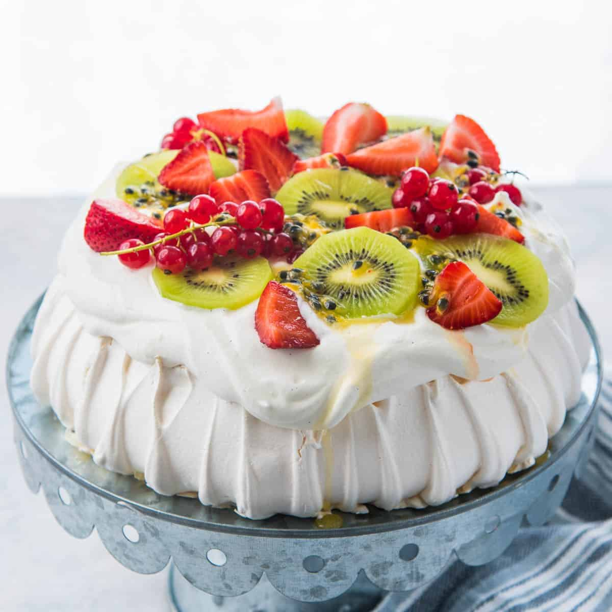

Pavlova

Description
Pavlova is a popular desert from New Zealand. It has a crisp, meringue-like outer shell but is soft and fluffy on the inside.
It is said that the recipe was created in honor of Anna Pavlova, a Russian ballerina, when she toured New Zealand and Australia in the 1920's.
The pavlova is light and airy - just like a ballerina's dance performance, hence the name.
Ingredients:
Pavlova base
- 221g egg whites, at room temp (about 7 large eggs - 225ml)
- 350g caster sugar (or granulated sugar, pulsed to make it finer)
- 1 tbsp cornstarch
- 2 tsp white vinegar
- 1 tsp grated lemon zest (optional)
To serve the pavlova
- 1 cup whipping cream
- 3 tbsp confectioner's sugar
- 2 tsp vanilla extract
- fruits of your liking for the topping (kiwifruit, berries, etc.)
- 2 - 4 tbsp of passionfruit pulp/syrup or lemon curd (optional)
Steps:
Pavlova base
- Make sure all the equipment is clean and dry (mixer bowl, whisk, two spatulas, sugar bowl, bowls to separate egg yolks and whites etc.).
- Preheat oven to 300°F / 150°C. Cut a piece of parchment paper that's big enough to line a baking tray. Draw a circle that's 8 in / 20 cm in diameter on the underside of the parchment paper. Line the baking tray with the parchment paper (with the drawn circle on the underside). Set aside until needed.
- Carefully break an egg, and strain the egg white into a small clean bowl, taking care not to break the egg yolk. Once you've successfully separated the egg white, transfer this into a mixer bowl that is on a weighing scale. Repeat with more eggs, until you have 221 g of egg whites (give or take 5 grams). If you get any yolk into the egg white, you must discard the contaminated egg white and start again with another egg.
- Do not throw away the egg yolks, since you can make other recipes with them (see end of the post for some ideas). Store egg yolks in an air-tight container, with a layer of water to coat them on top.
- Once the egg whites are measured and in the mixer bowl, whisk the egg whites on speed 4 (on a 10 speed mixer) until it reaches soft peak stage (i.e. when you lift the whisk, soft peaks should be formed in the egg whites). This may take about 10 minutes.
- When the egg whites are at soft peak stage, lower the speed to 3, and add the sugar, 1 - 2 tbsp at a time. Make sure each addition of sugar is dissolved before adding the next. I wait about 30 seconds between each addition. Also scrape down the sides of the bowl at least once, while adding the sugar. Do not rush this process. This can take about 10 -15 minutes.
- Once all the sugar is added, increase the speed to 4, and whisk the egg whites just until the sugar has completely dissolved, and the egg whites are thick and glossy, and hold their shape well.
- Here's how to check if the sugar has dissolved - take a small amount of the meringue mix between your fingers and rub it. If it feels grainy or has any granules, then there's undissolved sugar. If you don't feel any granules or grittiness, then the sugar is completely dissolved. I also like to make sure that I don’t see any undissolved sugar in a few other places in the meringue (under the whisk, in the bowl etc).
- Whisking egg whites until the sugar completely dissolves can take between 15 - 30 minutes, depending on the sugar you use. Do not rush this, and check on the meringue periodically to make sure you won’t over-whisk it. Use the spatula to scrape down the sides of the bowl a few times as well.
- While the egg whites are being whisked, place the cornstarch and vinegar in a small bowl and mix to combine. The cornstarch mix will be a thick, paste like slurry. (please note cornstarch forms an ooblek that is a solid when sitting, but a paste when moving around).
- Once the sugar is dissolved, and the meringue is glossy and thick, immediately add the cornstarch and vinegar slurry. Increase the speed to about 5 - 6 and let the cornstarch slurry mix into the egg whites for about 30 - 45 seconds. Then stop whisking and remove the bowl from the mixer.
- Using a clean spatula, scoop the meringue in the bowl out on to the parchment paper with the drawn circle. Pile the meringue in the middle of the drawn circle. Be careful not to scoop out the top edge of meringue in the mixer bowl to prevent any undissolved sugar getting into the mixture.
- Using an offset spatula, spread the meringue mix to fill the drawn circle on the parchment paper. Make sure the meringue mix is evenly tall.
- Once you have shaped the pavlova, use an offset spatula or palette knife to create furrows along the sides of the pavlova, going from bottom to top. Smoothen the edges to get rid of meringue points (that can burn easily). The pavlova should have soft, rounded edges. Create some swirls on the middle of the meringue on top as well.
- Transfer the cake into the preheated oven, and immediately reduce the temperature to 225°F / 110°C.
- Bake the pavlova for 90 minutes. Do not open the oven door during this time.
- When the 90 minutes are up, turn off the oven and allow the pavlova to cool down in the oven overnight (or up to 6 hours, until completely cooled down).
- Transfer the pavlova into an air-tight container and store in a cool dry place (free of draft), until ready to serve. Do not store in the fridge or freezer.
To serve the pavlova
- Place the chilled whipping cream in a chilled bowl. Whisk the cream on medium speed. (Do not over-whisk the cream as it can become grainy. If you whisk the cream on high, you risk over-beating it, and the cream will deflate faster, making the pavlova runny.)
- While whisking the cream, add the confectioner’s sugar and vanilla into it. Mix until you have stiff peaks, but the cream is still smooth.
- Spread the cream on top of the pavlova, and top it with the prepared fruits. Drizzle/spread the passion fruit of lemon curd over the top as well (if using).
- Serve immediately.
Click here for the link to the original recipe.